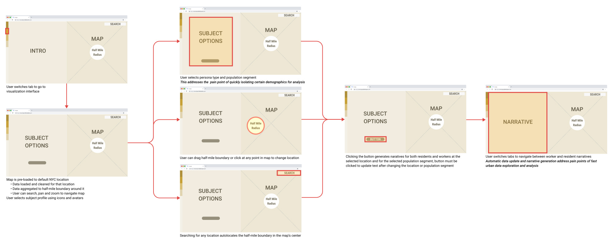

Beyond the Blue Dot
Who lives here? Who works here? A web tool that turns census data into short stories about the people in a place.

01Context
A planner working on a transit project wants to disrupt people’s days as little as possible, so they need to know who lives and works nearby, how they get around and what they earn.
Getting that from GIS takes days. Community meetings help, but they don’t represent everyone. There was no quick way to see a place at the scale of one person.
02Approach
Pick a location and a profile, and the tool builds a narrative about a typical or outlier resident or worker from national data, so it works anywhere in the US. The flow was shaped by interviews with practicing planners.



03Outcome
A working prototype and the capstone for the MS in Urban Planning. The name plays on the blue dot that stands for you in Google Maps. Here, the dot is a person.
Election data for 5M voters

Say hello.
Working on something for the built environment? I’d love to hear about it.